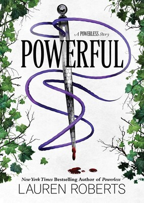

Powerful

˗ˏˋ ★ ★ ★ ★ ★ ˎˊ˗
This book was an amazing novell and it is one of my favourite reads and had me sobbing violently at the end. I loved how we saw more about Adena and how she was able to experience love before she died.
I loved the character of Adena in this book as I found her so likeable and adorable.
I liked how she would do anything for Paedyn and it gave more depth to their friendship.
I also really enjoyed the romance between Adena and Mak. I think they were really cute together and they deserved a better ending. I found their relationship to develop amazingly throughout the book. I loved how Roberts didn't dive straight into it but developed their characters and stories more.
The last part was heartbreaking. The way they only just got together and he was waiting there for her. When it was her point of view after she was taken it was so sad. When she started talking about how they broke her sewing fingers I sobbed. I felt so bad when she started talking to that person in prison and he realised that she really didn't deserve to be there. I sobbed so hard when Mak was waiting in the fort for Adena and he had a present for her. He was waiting for her for so long and didn't know that she was about to die. What broke my heart even more was when he went to watch the trials with her but ended up watching her die. When he started talking about being in the stars I sobbed. I am crying writing this review right now.
Overall this was the most heartbreaking book I've ever read. I don't think I cried harder than when I was reading this book. On a positive note I enjoyed the way it also developed Paedyn's character as it showed their deep connection and how she will get her revenge.
Write a Review